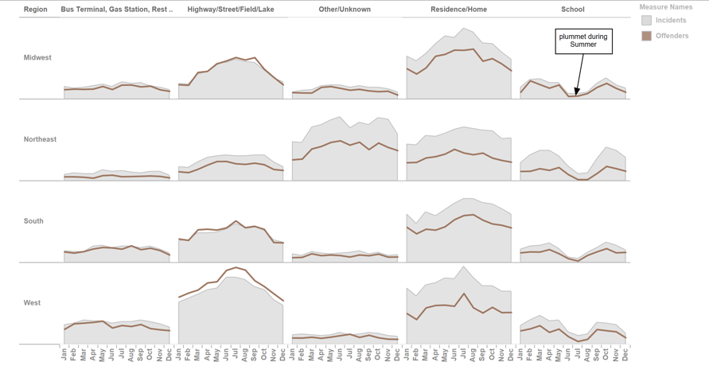
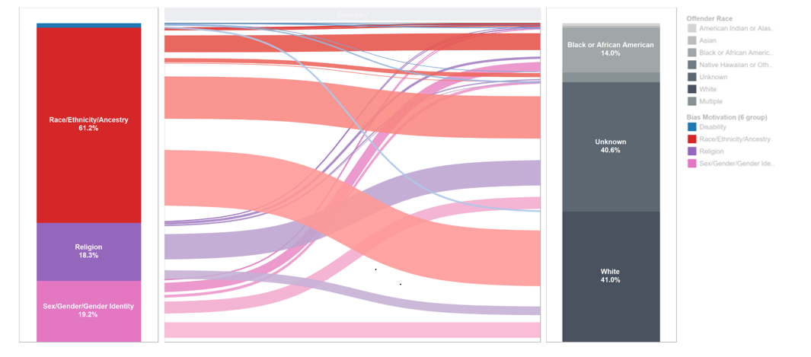
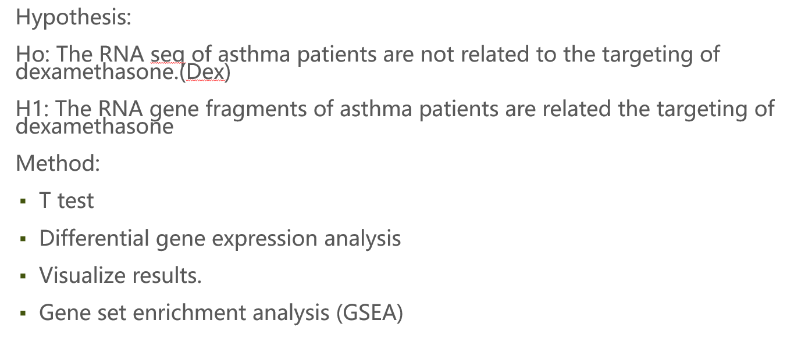
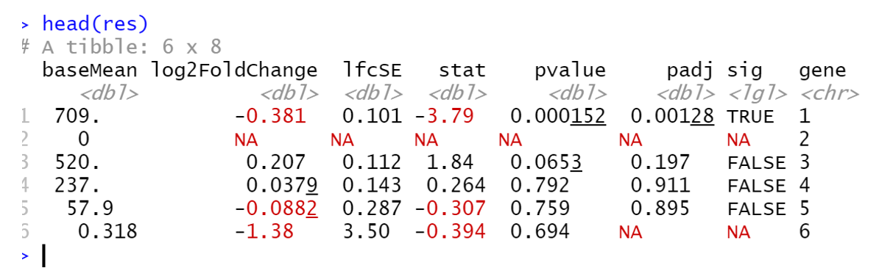
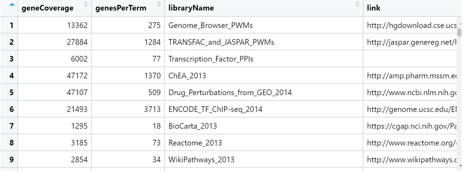

2 years of analytic experience at an eCommerce company and my last data science work at NYU langone lab to support medical care. Recently graduated with a Master in Information Technology from Gabelli School of Business, Fordham University. Passionate about delivering dashboards, insightful analytics, creative and optimization recommendations. Experienced in Python, R, Tableau, SQL and Google Analytics
Just like the adventurous Dora, I also love to explore challenging things and use data analysis to gain insights into the meaning behind the data. I am a data scientist. I build predictive models and craft stories through visualizations. I love taking on the Viz challenges and sharing stories with analytical perspective with others. Helping business grow through collaboration will make me feel fulfilled.
While I'm not coding, I like fitness, climbing, games, art and experience new things. I like visiting museums and exhibitions. On a random weekend, you might meet me in Chelsea's gallery or find me riding a citi bike in Central Park.

Hate crime and Homelessness are two topics that lot of people concern about in USA. However, it is still difficult to regulate with policies and laws that are existed now.
For hate crime, the government needs more efficient and comprehensive methods to track the crime data. This study is expected to use past hate crime and homeless data to predict the future crime incident.
Studying this issue can contribute to reducing homelessness and crime rate, improving social status and city appearance.
Available on Github.
BIG PICTURE
We use python to clean, merge two data sets including homelessness and hate crime with 140k+ disorder data for up to 12 years. Then, we determine the variables to make assumptions, create 20 Tableau charts according to hypothesis for visual analysis for analysis. Such as Homelessness, crime rate, victim, offender, location, researching the relationship between each other to make further predictions about the next hate crime.
Finally, display correlation and Random forest model with SPSS to test hypothesis.
Hypothesis
Here is our Hypothesis:
We set up three hypotheses, studied the number, location, and motivation of homelessness and crime, and determined 10 main variables, and then told the story from the visualization chart and reached the conclusion.
PHASE ONE: Visualization Results
Below we mainly show the results of the Tableau visualization chart.
Figure 1. U.S. Map of 12-Year Average Hate Crime Incidents and Homelessness (2007-2018)
The chart shows the 12-year average number of hate crime incidents and homelessness on the U.S. map for each State. The chart insight is that the higher the number of homeless, the highest the number of hate crime incidents and hate crime victims. In the West and the Northeast are the hotspot of homelessness and hate crime incidents as well. The chart implies there is approximately positive correlation between number of homelessness and number of hate crime.
Figure 2. Area Chart of Monthly Incidents Patterns by Location (2008-2012)

The chart shows the monthly accumulated number of hate crime incidents and offenders by incident location from 2008 to 2012, drilled down by region. The chart insight is to demonstrate the monthly trend of hate crime incidents in the top 5 incident locations with the highest number of crimes committed. The chart implies that deserted area such as highway, street field and lake as well as resident home has the highest number of hate crime, especially during Summer. Northeast has the highest “unknown” incidents location.
Figure 3. Sankey Chart of The Victim Flow From Bias Motivation to Offender Profile

The chart shows the percentage of victims by bias motivation and offender races and the flow of victims from bias motivation to offender races. The chart insight is the connection of bias motivation and offender races in order to identify the kinds of offenders that committed certain crime. The chart implies that the number of racism victims is the highest in the U.S. and white offenders, taking up to 41% of other offender races, plays a major part in hurting these people. Also, the racism victims are mostly attacked by white offenders or unknown offenders.
Figure 4. Butterfly Chart of Top 10 Types of Hate Crime in the U.S.
The chart shows the number of victim and offender in comparison regarding the top 10 hate-crime types in the U.S. The chart aims to specify the type of hate crime with the highest number of victims and the relationship between victim and offender.The chart implies that Anti-Black or African American is the top problem of hate crime with the highest number of victims and offenders. Mostly, number of offenders are equals to number of victims. However, Anti-Jewish hate crime offenders is approximately one third of number of victims.
Figure 5. Donut Chart of Offense Types in the U.S. (2007-2008)
The chart shows the accumulated hate crime victims of 76,696 and the percentage of offense type as part of a whole. The chart aims to identify the distribution of top 10 offense types with the highest number of victims in the U.S. The chart implies that destruction/vandalism of property, intimidation, simple assault and aggravated assault are causing the most concern in the U.S., especially Destruction of Property. There are 30.35% of victims are attack by destruction of property.
PHASE TWO: Statistical Model
We use statistical models such as regression model and random forest to verify hypotheses in Tableau and SPSS.
Scatterplot of Statistical Model and Regression Model (Logarithm)
The chart showed the trend line between number of homeless individuals and the number of total individual victims in logarithm form. The chart insight was to test the hypothesis if there was a correlation between homeless and hate crime incidents. P-value < 0.0001, which means that the slopes were significant. The chart implied that there was a positive correlation between individual victims and homeless individuals.
Statistical model of Random Forest
The chart showed the summary of importance predictor about if an individual would have to suffer from a single bias or multiple bias type of hate-crime. The chart insight was to understand which factor can predict if the hate crime incident was single or multiple bias. The most important factor was Total offender and second was incident location. The chart implied that the top incident location was at high-way or bus terminal, which was very deserted places with less people. On the other hand, school at elementary and secondary can be another place for hate crime incidents to happen.
Conclusion
Number of homeless and hate crime are positively correlated according to states. Highways and Home/Residence are the major places where these hate crimes take place and see increase of incidence during summer in all the regions. Majority of victims face race-based crimes. And mostly offenders are white and of unknown race. Anti Black or African Americans are the major type of crime with the highest number offenders whereas Anti Jewish victims are three times more than the offenders.Destruction of property and intimidation are the major offences committed which amounts to more than 50% of all the hate crime offences committed in the country.
Implications & Recommendation
Understand the relationship between homelessness and hate crime. Investigate the relationship of hate crime victimization, such as location, time, motivation bias and offender profile to help government predict the next possible incidents.
77,941 reported cases about hate-crime provided by the FBI & Homelessness data of 49 States of the United States (Nebraska is excluded) provided by US Department of Housing and Urban Development. Limited on homelessness data which is only on the State level and Year level. The reason for unknown offences and why they have not been reported and reasons behind the same.
Implications & Recommendation
[1] It can be implied that hate crimes are more prevalent in states with higher number of homelessness, so government need to be more careful in those areas, specifically in West and Northeast Region.
[2] Hate crimes in school see a spike as soon as the school starts, therefore schools need a policy framework which can improve understanding between people from different races. For Example: Organizing cultural meetups before school starts.
[3] As property destruction is more prominent in religious places. There should be better security measures incorporated during events to avoid these incidents.
Thanks for reading!
Asthma is a chronic inflammatory airway disease. The most common medications used for its treatment are β2-agonists and glucocorticosteroids, and one of the primary tissues that these drugs target in the treatment of asthma is the airway smooth muscle. RNA-Seq is used to characterize the human airway smooth muscle (HASM) transcriptome at baseline and under three asthma treatment conditions.
Methods: The Illumina TruSeq assay was used to prepare 75bp paired-end libraries for HASM cells from four white male donors under four treatment conditions: 1) no treatment; 2) treatment with a β2-agonist (i.e. Albuterol, 1μM for 18h); 3) treatment with a glucocorticosteroid (i.e. Dexamethasone (Dex), 1μM for 18h); 4) simultaneous treatment with a β2-agonist and glucocorticoid, and the libraries were sequenced with an Illumina Hi-Seq 2000 instrument. The Tuxedo Suite Tools were used to align reads to the hg19 reference genome, assemble transcripts, and perform differential expression analysis
Available on Github.
BIG PICTURE
This data shows that RNA-Seq is used to characterize the human airway smooth muscle (HASM) transcriptome at baseline and under four asthma treatment conditions.
This study tested whether the RNA sequence of asthma patients is related to the action of Dexamethasone.
Use R studio and biological package for differential expression analysis and biological gene comparison.
ABOUT THE DATA
Number:8x38694=309552, Tool: R studio, we set treated with dexamethasone versus which samples are untreated controls.
The links are available here:
airway_metadata
APPROACH

This research will work with the airway dataset. This data set comes from an RNA-Seq experiment, a high throughput sequencing method, on four human airway smooth muscle cell lines treated and untreated with dexamethasone. The data set has four control groups up to 38,695 rows. I have adopted 1) T test and Linear Regression, 2) Differential Expression Analysis and 3) enrichment analysis. In this case we choose variables cell and dex because we care about the cell line and which samples are treated with dexamethasone versus which samples are untreated controls. The basis for this type of analysis is common when analyzing high-throughput data. It has the following steps: Extract the expression values for a single gene. Run compare the mean expression between two groups using a statistical test. Repeat former steps for every gene. Then, from dplyr package to filter out results based on padj < 0.01. Gene set enrichment analysis (GSEA), is a method to identify classes of genes that are over-represented in a large set of genes.
Discussion
1. Visualization results
First, I converted the data into a matrix and performed Ttest to see if the effect of medication in the treatment was significant. As shown in Figure 1, a single gene is extracted to establish a linear regression. Because it is a simple linear relationship, the linear regression here is also equivalent to the Ttest result. The t-test is a common choice for performing a differential analysis. Next we will perform a simple differential test comparing treated and control groups in our gene expression data. The "dex" column in `metadata` gives group values for treated and control samples . I created a new data.frame called `genedata` with two columns: 1) log-transformed expression values of "ENSG00000002549" and 2) group values from the "dex" variable. Call the columns "ex" and "group", respectively .
Hypothesis H0: Dexamethasone is not related to gene expression, H1: Dexamethasone is related to gene expression. According to Figure 1 and Figure 2, the pvalue of this gene is as high as 0.9981. Although the variable is significant, the Pvalue in Ttest is much greater than 0.05, so accept the null hypothesis that dex has nothing to do with gene expression. After performing the T test on all genes, select the mean difference and Pvalue value for comparison.
Looking at all the Ttest results, most of the Pvalue are far greater than 0.05. Next we have to do Differential Expression Analysis using DESeq2.
2. differential expression

Now, I will use DESeq2 package for differential expression analysis of the airway data set to find differentially expressed genes between untreated and treated samples. I first loaded DESeq2 and set up the data to be compatible with DESeq by using the function DESeqDataSet(). The function DESeqDataSet includes an argument called design which asks for a formula that expresses how the counts for each gene depends on the variables in colData. In this case I choosed variables cell and dex because care about the cell line and which samples are treated with dexamethasone versus which samples are untreated controls. I set control group reference level for comparison in our differential expression analysis. I run the differential expression analysis steps through the function DESeq(). I generated a results table with log2 fold changes, p values and adjusted p values for each gene. The log2 fold change and the Wald test p value is based on the last variable in the design formula, in this case variable dex. Afterward, I added a column showing whether the significance is TRUE or FALSE based on cutoff padj < 0.01. Then, I used the filter() function from dplyr to filter out results based on padj < 0.01, and write this to a csv file using write_csv() function from readr. Therefore results will show which genes are differentially expressed.
In DESeq2, the function ggplot2 generates a Volcano Plot commonly used to visualize the differential expression results. The plot shows the log2 fold changes attributable to a given variable over the mean of normalized counts for all the samples in the DESeqDataSet. Points represent genes and will be colored red if the adjusted p value is less than 0.1. Points which fall out of the figure5 are plotted as open triangles pointing either up or down. Volcano map can conveniently and intuitively display the distribution of gene differential expression between two samples. Usually the abscissa is expressed by log2 (fold change), the genes with the greater difference are distributed at both ends, the ordinate is represented by -log10 (pvalue), and the negative logarithm of the P value of the T test significance. Generally, the larger the difference multiple is, the more significant the gene T test is, so the values in the upper left corner and the upper right corner are often concerned.
3. Gene set enrichment analysis
Gene set enrichment analysis (GSEA) is a method to identify classes of genes that are over-represented in a large set of genes. This is performed by comparing the input gene set with annotated gene sets from online functional databases such as Gene Ontology (GO) and KEGG. This is a common step in bioinformatics as it aids with the biological interpretation of results. Keeping only the set of genes that showed statistically-significant change in expression between conditions. Our threshold is be a false discovery rate (FDR) of 0.1 (i.e. no more than 10% chance that the observed change in expression is due to chance). Not all the genes in the results from DESeq2 were assigned p-values so I filtered out the genes without p-values followed by storing the significant genes separately.

I found the list of all available databases from package and set up list with databases of interest, shown in above. I used the Gene Ontology (GO) databases: GO Biological Process, GO Molecular Function, and GO Cellular Component.
The genes in this dataset use Ensembl indentifiers, while enrichR expects gene symbols. We'll use the biomaRt package to map our Ensembl IDs to gene symbols. Shown in above, No genes can be compared.
Conclusion
1. Evaluation
The t-test is any statistical hypothesis test in which the test statistic follows a t-distribution under the null hypothesis. A t-test is the most commonly applied when the test statistic would follow a normal distribution if the value of a scaling term in the test statistic were known.Through the T test of a single gene, the difference in mean is very small relative to the variance, hence the large p-value. We accepted H0 that there is no significant relationship between gene and dexamethasone.
With control experiments and filtering non-significant cells, it is found that the no significant cells are high proportion.
Gene set enrichment analysis (GSEA) is a method to identify classes of genes that are over-represented in a large set of genes. After database comparison, there are no similar genes
2. Content-Based Filtering
Let's simulate a new user searches for a song to see the recommendation results.

The results showed: 4 similar songs between TFIDF and Word2vec methods; 2 similar songs between TFIDF and LDA methods; 2 similar songs between Word2vec and LDA methods; 1 similar song among three methods. Therefore, the final recommended song related to the Box Tops’ Soul Deep was Four Tops’ You Keep Running Away.

BEYOND THE LYRICS: THE CROSSROAD OF MUSIC AND DATA VISUALIZATION
Always amazed by the power of data visualization, I wanted to bring the hidden trends in the meaning of songs to light. Additional to building music recommendation systems, I utilized Natural Language Processing, WordClouds and seaborn to investigate the popularity of lyrics from 1950s to 2000s as well as the topic in lyrics.
1. Topic Modeling Visualization
When modeling lyrical topics with LDA, lyrics were not stemmed, and the model defined 20 topics. The original word form was kept for more comprehensive analyses. I removed stop-words, generated token dictionary, and built a corpus. Then the corpus and dictionary were filtered into the LDA model with 20 topics.

Cluster 5,10,18, and 16 as well as cluster 20,19 and 14 were separated from other clusters in different dimensions due to the difference of languages.
Cluster 11, 17, 12, and 7 contained lyrics of violent or religious topics. For instance, cluster 11 represented religious topic with the most relevant words of “world”, “life”, “live”, “god”, “us”, “heaven”, “god”, “Jesus”, “soul”, “angle”, and many more. However, topic in cluster 12 seemed to be related to violent topic, or rap song, since the lyrics contained very negative words, such as the “f” word, “kill”, “dead”, “hate”, “hell”, “gun”, “shit”, “bitch”, “war”, “sick”, “shot”, or “murder”.
The first dimension (upper right side) included topics with positive vibe, such as love or party. For instance, cluster 15 seemed to have a “dance party” theme with mostly “oh”, “ooh”, “ah”, “yeah”, “shake”, “mama”, “yes”, “babi”, “ohh” and so on.
Multiple clusters with “love” topics were blended because “love” intuitively brings out many emotions. For example, cluster 8 seemed to represent “happy love” with “love”, “want”, “need”, “feel”, “like”, “kiss”, “true”, “touch”, “give” and so on while other clusters represented sadness.
In general, a good class of 20 topics could be defined with the LDA model. Each topic was approximately well-defined with different themes, such as religion, dance party, dark drama, happy love, and sad love.
2. Lyrics Analysis Through The Time
There are certain changes in lyrics from 1950s to 2000s:
"Love" was the most used word in songs from the 1950s to 1990s. The topic of love seemed to be the greatest inspiration for music at the time. In 2000s, "know" became the most used word and followed by "love".
The party vibe was shown more frequently in 1990s and 2000s. Those words such as "got", "na", "like", "oh", "la", "come", "let", "feel","make", and "yeah" became very popular in lyrics.
Though songs of 1950s and 1960s sounded more conservative yet filled with romantic vibe. The popular words were "girl", "time", "night", "make", "say", "day", "want","heart", "man", and "said".
The word "babi" was in the top 3 popular words in 1950s, however, from 1960s to 2000s, it was replaced with either "like" or "got".
Lyrics in 2000s:

Lyrics in 1990s:

Lyrics in 1980s:

Lyrics in 1970s:

Lyrics in 1960s:

Lyrics in 1950s:

Comparing the most popular words in lyrics of the 60s and 2000s, the lyrics in the 60s tended to bring a more subtle vibe than the 2000s did. The 60s lyrics had “babi”, “know”, “love”, “yeah”, “oh”, and “got”, which demonstrated the priority in love and the lover. At the same time, the 2000s lyrics had “love”, “la”, “know”, “got”, “de”, and “come”, which portrayed a bustling vibe and prioritized love and party at the same time.
Word Cloud for Lyrics in 1960s:

Word Cloud for Lyrics in 2000s:

CONCLUSION
In this project, three recommendation systems were built using a dataset with 1,019,318 unique users and 384,546 unique songs. ALS algorithm, which combines user and item knowledge, was used for collaborative filtering recommender. This recommender can be applied to old users with sufficient listening history to generate personalized recommendations. Many features of song were combined, such as artist similarity, TF-IDF, Word2vec and LDA modeling for lyrics, to build a content-based recommender. The content-based recommender is for new users with only one or a few searches and listening history. Similar songs for the current song will be recommended. Considering that Spotify has about 2 million monthly active users, our project is close to the monthly magnitude of the industry-level. Yet a lot of obstacles during the implementation process still emerged.
There are many lessons can be learned when working with Cloud and Pyspark. First, Spark has a high dependency on memory usage. During the testing phase, our virtual instance with 30GB memory crushes from time to time. It would save some cost to choose a high memory specialized instance on google cloud. To run cross validation on the 3GB listening history data, it would be secure to choose the following configuration. It is very helpful to use the Unix command “free -m” to check available memory in time. In addition, we learned that we need to cache the datasets whenever they are likely to be used more than once:


However, overcoming memory issues on cloud alone is not sufficient. Some default Spark settings needed changing to permit more executing memory and driver memory resources to be adapted by Spark.
In addition, debugging with Spark is quite suffering, as the error message is not informative enough. A common mistake is that the data type is not fixed or switched during the processing. Due to the Java development environment, different methods are very strict on input data type. Casting the data types should be a regular task while working with Spark. For example, ALS function in spark only allows integer input. It would return error even when the data type is big integer and so on. In the same vein, the raw ideas from the original data frame are no longer useful that new integer id pairs have to be generated.
An example of change the Data Type to Int:

An example of change ID's Data Type from Bigint to Int:

Curently, there are still obstacles towards a final hybrid recommendation system. At this stage, the main difficulty comes from the lack of valid lyrics data. In the future, combining the collaborative filtering and content-based recommendation systems can provide hybrid recommenders. According complementary advantages from various recommendation algorithms, hybrid solution, such as using overlappings, would provide users with suggestions of higher quality.For example, a hybrid system based on lyrics and listening history could make sure the users like not only the explicit topics of the tracks but also the genre from their taste perspectives.
As a matter of fact, more dimensions of recommendation are always better. Google naturally combined plenty of recommendation strategies in its wide and deep recommendation system with neural networks and ensemble methods. Though it is difficult to bring this project to such a top level, this precious practice undoubtedly helped lay a solid foundation for potential industrial workds involving recommendation systems or distributed systems.
Besides, there are some new ideas for further exploration:
1. User2Vec:
Word2Vec for NLP was used in this project to analyze the knowledge about songs. What if songs are considered as words and users are considered as documents? The listening history of a user is the text content of the document. Then Word2Vec and Doc2vec can be applied to find similar songs and users.
2. Graph algorithm:
Graph database is another new trend for online shopping recommendation systems. When modeling songs, artists, and users in a graph database, graph algorithms can help to find the relationship among those features and consider knowledge about songs, artists, and users at the same time.
3. Content-based filtering using music audio:
In this project and the lastest business scenarios, content-based filtering in the music industry means lyric-based or text-based. However, machine learning and and deep learning also show great results and improvements in audio processing. Analyzing the music audio directly could be a new direction for content-based filtering.
REFERENCE
1. A Beginner's Guide to Word2Vec and Neural Word Embeddings. (n.d.). Retrieved from https://pathmind.com/wiki/word2vec
2. Content-based Filtering. (2012, January 24). Retrieved from http://recommender-systems.org/content-based-filtering/
3. Karantyagi. (n.d.). karantyagi/Restaurant-Recommendations-with-Yelp. Retrieved from https://github.com/karantyagi/Restaurant-Recommendations-with-Yelp
4. Li, S. (2018, June 1). Topic Modeling and Latent Dirichlet Allocation (LDA) in Python. Retrieved from https://towardsdatascience.com/topic-modeling-and-latent-dirichlet-allocation-in-python-9bf156893c24
5. 5. MODELING. (n.d.). Retrieved from https://xindizhao19931.wixsite.com/spotify2/modeling
6. Welcome! (n.d.). Retrieved from http://millionsongdataset.com/
Every March, millions of basketball fans, celebrities, data scientists and even presidents tune in to watch and predict the championship of NCAA Division I Men’s Basketball Tournament. Excited by all the odds of filling out a perfect bracket, I joined the annual March Data Crunch Madness competition, hosted by Fordham University and Deloitte. Even though the NCAA cancelled the tournament because of COVID-19 in 2020, I, and other participants still decided to try our hand at modeling the tournament and kept the tradition at Fordham going.
Available on Github.
BIG PICTURE
The goal of the competition is to utilize past tournament data (from 2002 to 2019) to build and test predictive models in order to forecast outcomes of the Final Four in the 2020 NCAA Division I Men’s Basketball Championship. These outcomes are computed probabilistically, and the models are evaluated by log loss. For instance, Team 1 has 70% likelihood of winning Team 2. Also, if you are not familiar with log loss, just know that the best model has the lowest log loss.
APPROACH
Coming into this competition, I did some research on similar projects and came up with a general idea of what to do. As far as I knew, some projects went with logistic regression as their primary algorithm because of the probabilistic nature and simple implementation, yet effective. With my prior knowledge, I took a similar approach to other models while making a few interesting changes with novel features.
So, what is new about my approach?

Instead of analyzing the stats of each team, I engineered new features by transforming all variables into Difference and Ratio, or Quotient, between two teams in each of 63 games.
Then I calculated the Winning Rate and Teamwork Score for each team and coach. The level of teamwork can be reflected by the percentage of assist score (80%) and the defensive efficiency (20%). The team can be more stable if they rely on assist and better defense to win the game.
To select the most important features, I removed highly correlated variables (Pearson correlation > 0.9) and applied Embedded method with Random Forests. Some advantages of Embedded methods are higher accuracy, better generalization, and being interpretable (based on importance). Also, it works well when dealing with high-dimensional dataset.
After hyperparameter tunning Random Forest Classifier with Grid Search, I trained Logistic Regression, Gradient Boosting, Support Vector Classifier, Random Forest Classifier, and Linear Discriminant Analysis (LDA) and selected the best one with lowest log loss.
MODEL SELECTION
Random Forest Classifier is selected as the best model due to the most optimal accuracy rate and lowest log loss. That should be enough for the competition. The perfect scenario was having the 2020 data for model application. However, to resolve the problem, I trained the models with 2002 to 2017 data, tested the models with 2018 data and then I applied the model on the 2019 data to generate prediction and probability.

PREDICTION RESULT
The accuracy of the best model Random Forest Classifier is 77.61% with a log loss of 0.51.
So which teams are the final four and champion?

WRAPPING UP
I am happy to say that completing this competition has made me a more competent data scientist, especially under the unprecedented situation. I am excited and hopeful that the 2021’s tournament will not be cancelled so I can make some fun bets with my friends using this model. Thanks for reading and if you want to learn more about my code, please visit my github.
MARCH MADNESS VISUALIZATION
If you are interested, here are some interesting visualizations about March Madness! See if you want to make a bet for Virginia !